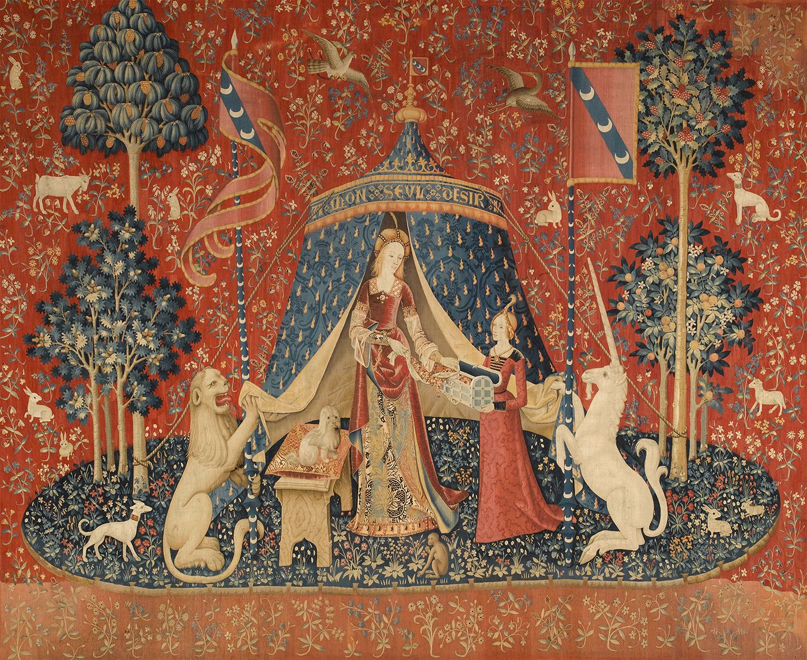

paragraph

"À Mon Seul Désir", part of the Lady and the Unicorn series, ca. 1500*

Sleeping Venus, Giorgione, ca. 1510
"À Mon Seul Désir", part of the Lady and the Unicorn series, ca. 1500*
Sleeping Venus, Giorgione, ca. 1510
paragraph
"Virgin and Child in Majesty", made in France, ca. 1175-1200
Madonna of the Goldfinch, Raphael, ca. 1506
paragraph